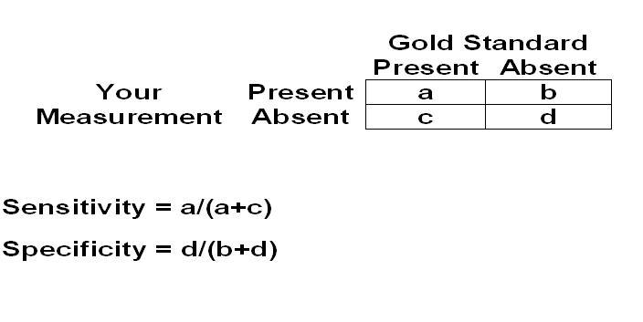

Measurement Validity - Sensitivity
Lead Author(s):
Jeff Martin, MD
What Is Sensitivity?
What Is Sensitivity?

Sensitivity
is the ability of a measurement to identify correctly those who
HAVE
the characteristic (
disease
or
exposure
) of interest.